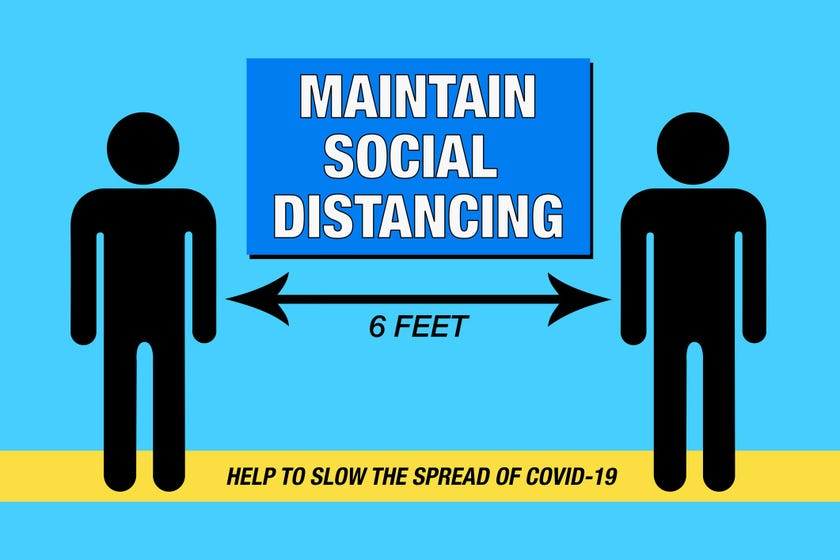
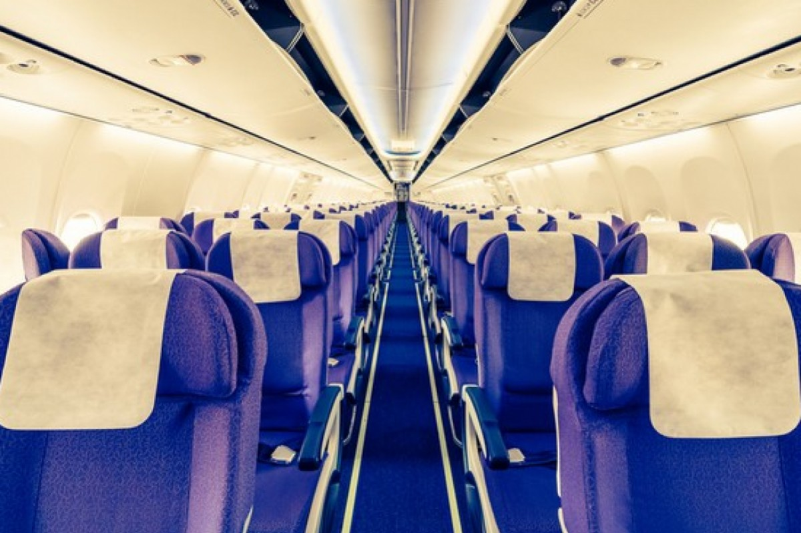

Wash your hands
Washing your hands properly removes dirt, viruses and bacteria to stop them spreading to other people and objects, which can spread illnesses such as food poisoning, flu or diarrhoea.
Wear a face mask
Wearing a face mask will help prevent the spread of infection and prevent the individual from contracting any airborne infectious germs. When someone coughs, talks, sneezes they could release germs into the air that may infect others nearby. Face masks are part of an infection control strategy to eliminate cross-contamination.
Keep your distance
Social distancing means keeping apart from people to restrict the spread of coronavirus.Try to stay at least 2 metres (3 steps) away from anyone you do not live with (or anyone not in your support bubble)
Avoid unnecessary travel
Travel increases your chance of getting and spreading COVID-19. Staying home is the best way to protect yourself and others from COVID-19. You can get COVID-19 during your travels. You may feel well and not have any symptoms, but you can still spread COVID-19 to others. You and your travel companions (including children) may spread COVID-19 to other people including your family, friends, and community for 14 days after you were exposed to the virus. Don’t travel if you are sick or if you have been around someone with COVID-19 in the past 14 days. Don’t travel with someone who is sick.
